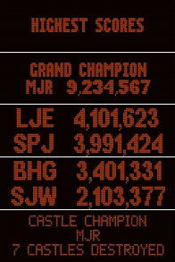

A GameInfo object contains a Javascript reference to the system's internal information records on a game. This type of object is returned from gameList.getGameInfo(), it's used to indicate which game is selected in gameselect events, and is used in most other contexts where the system refers to a particular game in its database.
The properties of a GameInfo object are actually "getters" that access the program's live database of loaded games. Javascript doesn't allow assigning new values to getter properties, so you can't change a game's properties by direct assignment. Instead, you use the update() method, which takes a descriptor object with the properties to modify. The update() method lets you change multiple properties in a single operation, which is good because changes to a game's metadata can trigger time-consuming side effects, such as updating the XML file containing the game and redrawing the wheel UI. You'll usually want to change several properties at the same time when updating a game, so it would be extremely inefficient to do repeat of the extra side-effect work for each individual property change. update() lets you group changes into a batch, so that the side effects (XML updates, wheel refresh) are only done once for the batch.
You don't create GameInfo objects directly. You get them from the system, such as from the game property of the gameselect event, or by calling gameList.getGameInfo().
A GameInfo object is a Javascript object, so it has the usual rules for Javascript object lifetime, which is to say that it stays valid as long as you have a reference to it somewhere in your program.
The system's internal game record for a given game, however, can be deleted if the game database is reloaded and that game isn't included in the reloaded game set. The game database is reloaded any time the user changes settings (for example, via the interactive Settings dialog), since changes to the settings can affect which folders are scanned for games and XML game list files.
If the system's internal game record for a game is deleted due to a settings change, and you're still holding on to a GameInfo object that references that now-deleted game, the GameInfo object itself is perfectly valid, per the normal Javascript rules. However, the methods that it uses to access the live game database will all throw errors if you try to use them, because they'll see that the underlying system game record no longer exists.
In most cases, the easiest way to avoid any hassles with deleted game records is to avoid caching or storing GameInfo references in global variables or object properties. Rely instead on system calls or events that give you up-to-date information on whatever game you're interested in. For example, if you want to access information on the current game shown in the wheel UI, call gameList.getWheelGame(0) to get the actual current game, rather than keeping a separate global variable with the GameInfo object from some past event.
If for some reason you do need to hang on to GameInfo objects for longer than it takes to process the current event, you can use settingschange events to clear out old references. That event tells you whenever the system has reloaded the settings, which implies reloading the game list.
The id property of the GameInfo object is a special internal identifier that the system uses to find the in-memory data structure for the game. This has a unique value for each loaded game, and it remains the same for each game as long as it's included in the loaded game list.
One important use for the id value is to compare two GameInfo objects to see if they refer to the same game. If they do, their id properties will be equal.
A game ID value isn't permanent; it's only valid as long as the in-memory object for the game exists. The in-memory object for a game is initially created when PinballY starts up and scans for game files and database entries, and only exists until (a) the end of the current program session, or (b) the game is removed from the loaded game list due to a settings change, whichever comes first. Don't store these IDs in external files that might persist across sessions, as they'd be meaningless in a future session.
You also have to be careful about saving these IDs in global variables, since they can become invalid any time the game list is re-loaded. The program has to re-load the game lists any time the user updates anything in the Settings dialog, since settings changes can affect what's included in the game lists. If a game is deleted from memory after a re-load, because that game is no longer included in the new settings, the ID value that referred to the game becomes invalid.
If you're storing ID values in global variables, you can listen for the settingschange event, and use it to clear out old ID values.
The program has a second identifier for each game, known as the "config ID", that's more stable across sessions. It's called the config ID because PinballY uses it to store game references in its own configuration files. You can use it for similar purposes.
The config ID is based on the game's title, manufacturer, year, and system name. This makes it stable across sessions, but it's not necessarily permanent for a given in-memory record. Since it's based on the game's metadata and system assignment, the config ID for an in-memory record changes whenever you change the game's title, manufacturer, or year, or assign it to a different system, or change the display name of the player system.
The way to think about the config ID is as a permanent identifier for a game in the abstract, as opposed to a concrete file that implements that abstract game: "Medieval Madness for Visual Pinball 9" is the abstraction, and "C:\VisualPinball\Tables\mm_1234.vpt" might be one concrete file that implements it.
gameInfo.categories: An array containing the game's category tags, as strings. The user can tag a game with any number of categories through the Game Setup menu in the wheel UI.
gameInfo.configID: A string giving the configuration ID of the game. See Config IDs above. PinballY uses this string to identify the game when it's referenced in saved settings files (e.g., to record the last game selected on the wheel so that it can be restored the next time the program starts).
gameInfo.dbFile: The full name (including folder path) of the XML database file containing this game's entry. If the game isn't configured, this is undefined. Every configured game has an entry in exactly one XML file. The XML file is always associated with the game's designated player system, but any given system can have multiple XML files, because HyperPin and PinballX used the file location as a simple category system.
gameInfo.dateAdded: A Date value representing the time and date when the database entry for the game was added to PinballY. Undefined if the game hasn't been configured.
Javascript represents dates internally in a time zone-independent fashion, and PinballY does the same thing in its databases. This generally makes operations on date values straightforward, since you don't have to worry about time zone trivia like daylight time changes; Javascript handles those sorts of things automatically. You can use all of the normal Javascript Date functions with this value.
gameInfo.displayName: The display name for the game. This is the name that the program displays on-screen for the game, such as in the wheel UI and the game information popup box. The standard format for this is "Title (Manufacturer Year)", when all of those items are available. If no title has been manually entered, the playable game file (if any) is used in its place. The manufacturer and/or year are omitted if they're not set in the game's XML database entry or if it has no entry.
gameInfo.erase(): Erases the XML game list entry for the game. The game record remains in memory, because that's tied to the game file, and the statistics related to the playable game file (such as total play time and count) are kept.
gameInfo.filename: The filename of the game as it appears in the XML database file. This might or might not include a path and/or extension; the format can vary because these XML files can come from different sources (HyperPin tools, PinballX tools, or manual data entry from users). PinballY accepts these variations when reading the files, but it always uses a uniform format when making updates, storing the filename only, with no path or extension. If your database files were created with PinballY, you'll always see that format. If you manually edited the files or migrated data from another system, though, the path and/or extension might be present.
Note that the filename here is the manually entered filename from the database, so it might or might not refer to an actual, existing file. It also doesn't typically include any path information, since files are usually assumed to be in the table file folder for the associated system. You can get the actual file system information on the file, including its full path, extension, and whether or not the file exists, via resolveGameFile().
gameInfo.getHighScores(): Get the high scores for this game. This function operates asynchronously, since high scores are retrieved by a separate program. Instead of directly returning the score information, the function returns a Javascript Promise object, which is resolved when the high score information is retrieved successfully. The promise can also be rejected, which can happen if the game has no high score information or the PinEMHi launch attempt fails. On success, the "resolve" callback is invoked with an array of strings, containing the high score text returned from PinEMHi, one line of text per array element. See Retrieving high scores below for a usage example.
gameInfo.gridPos: An object with properties .row and .column, both integers, giving the "grid position" of the game as stored in the game database. This is mostly provided as a special case for Farsight's The Pinball Arcade, which doesn't provide any sort of command-line option to let an external program launch a specific game, but instead always presents its own game selection UI at startup. The grid position is a (poor) attempt to work around that by enabling PinballY to send a series of simulated keystrokes to TPA to navigate the selection UI automatically. The selection UI arranges all of the games into a rectangular grid, so in principle you can send a series of keystrokes to launch a particular game if you know its position in the grid. In practice this has proven to be unreliable, since TPA's startup UI is too unpredictable: it frequently pops up extra startup alert messages that throw the key macros out of sync, for example, and of course the grid layout changes every time they add a game. Plus they change the overall UI from time to time. Even so, PinballY provides this information for users who want to try to make it work.
gameInfo.highScoreStyle: A string with the high score style for the game, for the purposes of generating the automatic high score display in the video DMD window. This should be one of "Auto", "DMD", "Alpha", "TT", or "None". It can also be undefined if no high score style has been set (in which case the system uses the "Auto" default).
gameInfo.id: An integer giving the internal Game ID, which the system uses to locate its in-memory record for the game. This value is unique per game, so this can be used to determine if two GameInfo objects refer to the same game.
gameInfo.ipdbId: A string giving the IPDB ID of the game. This is the database key that IPDB uses to identify the game; all of the existing entries are in the form of a decimal number, but we use a string to store the ID just in case IPDB ever expands the format to allow non-digit characters. The ID for a given game should be permanent, and it should be unique across all of the pinball machines known to IPDB. The ID can used to address the game's IPDB page via a URL of the form https://www.ipdb.org/machine.cgi?id=ipdbId.
gameInfo.isConfigured: A boolean value indicating if the game has been configured. A configured game has an XML database entry; an unconfigured game represents a playable game file that PinballY found in a system's table folder, but which doesn't have a corresponding XML database entry.
gameInfo.isFavorite: A boolean indicating if the game is marked as a favorite. The user can designate a game as a favorite through the main menu in the wheel UI.
gameInfo.isHidden: A boolean value indicating if the game has been hidden. The user can hide a game via the Game Setup menu in the wheel UI. A hidden game isn't shown in the wheel UI except when the "Hidden Games" filter is selected. The system still keeps track of hidden games internally, though, specifically so that it can remember not to display them in the normal wheel UI when it discovers their game files during the table folder scan at startup.
gameInfo.isMarkedForCapture: A boolean value indicating if the game has been marked for capture. The user can mark games for capture through the Game Setup menu in the wheel UI.
gameInfo.lastPlayed: A Date value representing the time and date when the game was last launched from PinballY. Undefined if the game has never been played. As with dateAdded, you can use all of the normal Javascript Date functions with this value.
gameInfo.manufacturer: A string with the name of the manufacturer, if set.
gameInfo.mediaName: The "media name" for the game. This is the root filename (without path or extension) used for all of the game's media files. To form the full file system name of a particular media file (e.g., the playfield video), the system combines the directory path for the file type, the media name, and a filename extension for the type.
gameInfo.path: The full file system path of the directory containing the file, if known.
gameInfo.playCount: An integer giving the number of times the game has been launched from PinballY.
gameInfo.playTime: An integer giving the total amount of time the game has been played when started from PinballY, in seconds.
gameInfo.rating: A number giving the user's "star" rating entry for the game (0 to 5, in increments of 0.5: 2.5 represents 2½ stars). The special value -1 means the game has no rating. Note that 0 stars is a valid rating, not the absence of a rating.
gameInfo.renameMediaFiles(array): Rename the media files as specified in array. See Renaming media files below for details.
gameInfo.resolveGameFile(): Resolves the playable game file for this game. This finds the folder location and filename of the game file, by combining information from the game database entry and the system configuration, using the same algorithm that PinballY uses internally to find the file when launching the game. The return value is an object with the following properties:
gameInfo.resolveMedia(type, mustExist): Resolves the game's media file(s) of the given type. type is a media type name, which must match one of the following exactly:
mustExist is a boolean indicating whether the function should return only files that actually exist, or the names of all possible files of the type, even if they don't exist.
The return value is an array of strings giving the names of the matched files. Each filename includes its full absolute directory path. An array is returned even if no files are matched; in this case the array is simply empty.
There are two reasons that the function can return multiple files for a single media type. The first is that most media types support multiple formats, and some of the formats might have multiple extensions; for example, most of the image types will match .png, .jpg, and .jpeg files. When mustExist is false, the function returns all of the possible matching files, with all of the supported formats for the type and all recognized extensions for each format. The order of the names returned in this case reflects PinballY's order of preference for choosing files when more than one matching file exists: the program picks pick the first item in the list that corresponds to an existing file. If you want to determine which file that PinballY will actually display for this type when the game is selected in the wheel UI, call the function with mustExist set to true, and then simply use the first array element.
The second reason that the function can return multiple files is that some of the media types can actually have multiple associated items. In particular, flyer images can use multiple files to represent the separate pages of a multi-page flyer, or the front and back sides of a single page; instruction cards can contain collections of cards with different rule variations or different language versions. For these types, the program lets the user cycle through the multiple items when displayed by using the Next/Previous buttons.
gameInfo.resolveROM(): Resolves the ROM file for this game. This tries to determine which ROM file for the game is installed for use with VPinMAME, if any, and which ROM name is associated with the game in the current DOF configuration. The return value is an object with the following properties:
The DOF and VPinMAME ROM names often differ in the version number suffix. Most machines that use ROM software have several versions of the ROM available; for example, for Medieval Madness, you'll find ROM versions mm_05, mm_10, mm_109, mm_109b, and mm_109c. DOF typically drops the version suffix so that its .ini file entry can match any version of the same game, so the DOF .ini entry for Med Mad is just "mm". That's what you'll see in the .dofRom result. VPM, on the other hand, uses an exact version, so the .vpmRom result will include the version suffix.
Note that ROM associations may be found even for games written for systems that don't use VPinMAME, such as Future Pinball, so you shouldn't assume that a valid VPM ROM in the result means that the game actually uses the ROM. The ROM lookup includes a search by title, so if there's a ROM for any version of a title, it will likely be found even for non-VPM versions of the same game. For example, if you ask for the ROM for a Future Pinball version of Medieval Madness, the system will find the MM ROM even though Future Pinball doesn't use it. This is actually useful for PinballY internally, since the program's main use for the ROM association is to select the DOF effects for the same game. But it might be confusing if you're trying to do something specifically tied to VPM's use of the ROM. It's difficult to determine in general if a particular game implementation uses a particular ROM version, since that depends on both the player system and internal details of the game implementation that aren't exposed in a usable way.
gameInfo.rom: The name of the ROM for the game, if a ROM has been entered manually in the database. The ROM name can usually be inferred from the title, so this is usually undefined. You can use resolveROM() to get more information about PinballY's determination of the game's ROM. That function gives you access to the machinery inside PinballY that does the title lookups, and it returns details about the ROM for different uses.gameInfo.system: A GameSysInfo object indicating which player system this game uses. That object's properties provide information on the configuration settings for the system.
gameInfo.tableType: A string giving the game type code, per IPDB. This is undefined if the game isn't configured or no type code has been entered. The valid values are:
gameInfo.title: The title of the game. If the game has been configured, this is the title manually entered by the user; it's generally the title that the game is officially known by, such as "The Addams Family" or "Funhouse". If the game hasn't been configured, this is simply the filename.
gameInfo.setHighScores(scores): Sets the game's high score data. scores is an array of string value giving the new high score text. See Custom high scores below for information on how this should be formatted.
If scores is null or undefined, any previously retrieved high scores for the game are forgotten. This causes PinballY to retrieve the high scores again the next time the game is selected in the wheel UI. This is useful when you know that the actual stored scores have changed or might have changed. PinballY itself automatically clears its internal high scores for a given game each time the game is launched for play, since a new high score could be added on any run.
Note that setHighScores() doesn't affect any externally stored high score information. This can't be used, for example, to update an NVRAM file with new high scores. setHighScores() only affects PinballY's in-memory copy of the high score information that it uses to generate high score displays on the DMD and info box popups.
gameInfo.update(desc, options): Update the game's properties. This updates the in-memory record for the game and saves the changes to the XML database file where the game is listed. It also updates the UI as needed to reflect the changes. See Updating metadata below for more details.
gameInfo.year: An integer giving the game's original release year (e.g., 1995), if set in the game database.
You can't change game metadata by assigning new values to GameInfo properties. The properties are read-only "getter" methods, so they can't be changed by direct assignment. Instead, you can use the update() method:
desc is an object containing the properties to be updated in the game metadata. Only the properties actually set in the object are updated; properties not set are left unchanged. This lets you selectively update whatever subset of properties you wish to change without affecting the others. The properties to be updated have the same names as in the GameInfo object, and accept the same sorts of values.
options is an object specifying options via its properties. You can omit this if you want to use default options. The option properties are:
The return value from update() is an object value that contains information about the operation. This contains the following properties:
The elements of the renamedMediaFiles array are objects, with properties {oldName: string, newName: string}, giving the old and new filenames of the affected files. The filenames include the full directory path and extensions, so these can be used in file system APIs to refer to the exact files. Note, however, that it might not be possible write to, rename, or delete these files at the operating system API level if the game is selected in the UI, because the files might be locked for video and/or audio playback. The renameMediaFiles() method takes this into account and can be called even if the game is currently selected.
The metadata properties that can be updated, and thus the valid properties for the desc object, are:
For example, here's how you'd change the title, year, and manufacturer for a game record:
Note that the list of valid desc properties doesn't include all of the GameInfo properties. Some of the GameInfo properties reflect derived values (that is, values computed from other properties), which can't be updated by themselves. Derived values will automatically be updated to reflect changes to the properties they're computed from, though; for example, you can't set the displayName property directly, but changing the year or manufacturer will affect the computed value of displayName. Any properties in the desc object other than ones listed above are ignored.
The system property is restricted. If the game record is associated with an existing game file, the system can only be changed to another system that keeps its table files in the same folder. A game record that's tied to a file is permanently associated with that file, and each system's games can only be loaded from one folder, so changing to a system that uses a different table folder would make the game record unusable. If the game isn't associated with an existing file, its system can't be changed at all, because that could create a conflict with an existing file in the new system's table folder.
Changing a game's metadata sometimes has the side effect of changing the base filename template for the game's associated media files, since the media name template is based on the game's title, manufacturer, and year. Changing any of these properties will change the implied media base name.
By default, gameInfo.update() automatically renames any existing media files to the new implied name as needed. This is desirable in most cases, since it lets you update the metadata elements without breaking any file associations. You don't have to do anything if you want to let the function rename affected files automatically.
If you prefer, though, you can tell update() not to rename affected media files automatically, by setting renameMedia to false in the options object argument to update(). This might be desirable if you're intentionally manipulating a game's metadata separately from its file associations, or if you want to leave it up to the user to decide on the renaming. PinballY's own UI takes the latter approach: when a metadata change made through the "Edit Game Details" dialog affects the game's media name template, the dialog tells the user about it and asks the user to decide whether to rename the files to match the new media name or leave them as they are.
If you do want to base the renaming decision on some outside factor, either the user's input or something else that you need to compute on the fly, you can use the following procedure:
By the way, you might wonder why we go to all of this trouble to separate the update and rename steps, when we could have just asked the user up front about the renaming, before even attempting the update. The reason to separate the steps is that it's hard to know in advance if any renaming will be necessary, and you'd probably rather not bother the user with the question until you know whether it requires an answer in the first place. If you're performing updates as part of an automated process that updates many games en masse, you'll probably want to decide up front about renaming, so in that case you can skip the two-step process and do everything in update(). The two-step process is only needed when you want to defer the decision about renaming until you know that renaming is actually needed.
How to use renameMediaFiles(): renameMediaFiles(array) takes an array of objects listing the files to be renamed. The array elements are objects with properties {oldName: string, newName: string}, listing the existing name and new name for each file to rename. The filenames are all given with full absolute paths. Each array element corresponds to one file to be renamed. This is the exact same array format returned from update() in the renamedMediaFiles property of the results object returned from that method, so you can pass the renamedMediaFiles array from update() directly to renameMediaFiles() to carry out the renaming that update() would have done itself if given permission.
The renameMediaFiles() method carries out all of the listed rename operations. This method temporarily stops any playing video or audio in the current game to ensure that the UI doesn't have playback locks on the files that would prevent the renaming, so you might see the playing videos in the UI restart when you call this method. All of the renames are attempted, even if some of them fail. An accounting of any errors is returned in the results object.
The return value from renameMediaFiles() is an object with the following properties:
Using renameMediaFiles() without update(): You're free to call renameMediaFiles() as a standalone method without changing any game metadata via update(). Just prepare the array of rename objects in the same format returned from update(). It's better to use renameMediaFiles() than to go directly through Windows file system APIs, since renameMediaFiles() accounts for the possibility that the files are locked for video or audio playback in the UI; trying to rename files directly through Windows APIs can fail due to lock conflicts if any of the files are currently being displayed. On the other hand, it's better not to use renameMediaFiles() for anything other than actual game media files, since the routine will interrupt playback in the UI, exactly because it tries to make sure that the files aren't locked for playback. So it's not recommended to use this routine as a generic way to rename random files.
The game information object method getHighScores() lets you get the high score information for a game, if it's available. This function works asynchronously: it doesn't directly return the high score information, but rather returns a Javascript Promise object, which invokes a callback you provide when the background operation completes. Promises are a newer Javascript feature that are now supported in all major browsers, so you can find plenty of information about them on the Web if you're not familiar with the concept.
The reason that we have to use the asynchronous Promise scheme is that high scores are obtained via a separate program, PinEMHi. We launch that as a child process, which can take a couple of seconds, so we don't want to hold up the UI waiting for it to finish. Instead, we launch the program in the background, and let it run separately while we carry on with our regular UI activity. When PinEMHi finishes, we go back to processing the results. The Javascript Promise was designed for exactly this type of scenario, and it makes the asynchronous handling easy to code.
Here's the process for retrieving high scores:
The completion function that you provide to .then() takes a single argument, which is an array of strings containing the results from PinEMHi. This is simply the PinEMHi text output, broken up into one string per line of text.
The array of strings has an extra property, source, which has a string value identifying the source of the score data. This uses the same values as the source property in a highscoresready event.
Here's an example that gets the high scores for each new game that's selected in the wheel UI, and displays the results on the debugger console.
There's no error handler in this example, so any errors will simply be ignored. If you wanted to add a message in case of error, you'd just add a second function that gets called on error to the .then() call:
This is all standard Javascript Promise coding, so if you need more help with Promises in general, you can find lots of tutorial material on the Web.
PinballY uses a separate program called PinEMHi to retrieve high scores for most games. PinEMHi works with most Visual Pinball games that use emulated ROMs from original arcade games, and with all Future Pinball games. It doesn't work with Visual Pinball games that aren't based on emulated ROMs, which means it can't retrieve high scores for most electromechanical (EM) games written in VP. It also doesn't work with any other systems, including any of the commercial pinball games.
You can use Javascript to extend high score coverage to other games beyond what PinEMHi supports. PinEMHi is limited to the FP and VP ROM games because there are no other "standard" ways of storing high scores, but that doesn't prevent you from adopting your own ad hoc methods for other types of games. For example, you could use Visual Pinball's scripting capabilities to add your own custom high score storage to EM tables.
The best way to extend high score coverage to your own custom storage locations is to listen for the High Scores Event types, and intervene for games where you know how to provide custom data. A particularly good approach is to intercept that highscoresready event, and check the event.success property to identify games that PinEMHi doesn't cover:
This approach is nice because it lets PinEMHi handle everything it knows about, and only tries to provide custom data for games that PinEMHi doesn't cover. You don't have to figure out on your own whether or not a game will be covered by PinEMHi, since your code is only invoked for games that aren't covered.
If for some reason you wanted to replace the PinEMHi data across the board, you could do that as well: you'd listen for the highscoresrequest event, which is fired before PinEMHi is invoked, plug in your own high scores just like we did above, and then cancel the highscoresrequest event to prevent PinEMHi from running at all.
We leave to you the details of how to actually retrieve the scores for particular games. As mentioned earlier, there are no standards or conventions for how or where to store high scores other than the ones that PinEMHi already handles. So there's no one-size-fits-all approach that we can suggest for handling games not covered by PinEMHi. We can offer a general tip, though: whatever you do will probably involve reading disk files, and if you need to do that, an easy way is to use the Windows Scripting file system object:
If you've used Visual Basic or PowerShell, you're probably already familiar with that. It works the same way in Javascript as in other languages. If you haven't seen this object before, there's lots of online help for it on the Web, since it's widely used in Windows scripting of all sorts.
If you're providing your own custom high score text, you should be aware of how PinballY formats the text on the display. This will help you control the appearance when it's displayed.
PinballY automatically displays the high scores for the current game in its DMD video window and on your real DMD device, if you have one. It alternates between displaying high scores and displaying the game's DMD background media (image or video), to simulate the way that real machines rotate through high scores and other messages and graphics in "game over" mode.
On the real machines, DMDs can generally only display two or three lines of text at a time, since they don't have all that many pixels. Most alphanumeric displays (used on the late 1980s machines) have a fixed two-line display area. So PinballY tries to simulate this appearance by breaking up the high score text into blocks of two or three lines of text per screen, and then showing the screens for a few seconds each in sequence.
You can tell PinballY how to break up the text into screens by inserting blank lines into the custom text. When PinballY displays the text, it scans through the list of messages and breaks them up into "groups" at the blank lines. For example, consider this custom text:
We've used blank lines to identify the group breaks. When displayed, this will produce a series of screens like this:
If you don't insert blank lines to delineate the groups, PinballY will still break the text up into screens of one to three lines each, but it'll be forced to pick the line groupings mechanically. It uses this procedure:
Note that this procedure will be applied even if you use line breaks, if the groups set off by your line breaks are too large. For example, if provide a group of four lines and then a blank line, the four lines will be displayed two at a time. If there are no blank lines anywhere, the procedure is simply applied to the list as a whole.
It's worth pointing out that this line break procedure wasn't created for Javascript's sake. It was really designed around PinEMHi's output. PinEMHi usually uses blank lines to set off groups of text that form "screens" - but not always, so PinballY has to break up PinEMHi's output in some cases. The procedure described above is just a heuristic that produces decent results for nearly all PinEMHi output. For Javascript purposes, you don't have to rely on the heuristics; you can control the exact layout by inserting blank lines to specify the grouping you want.
Upper/lower case: It's generally better to use pure upper-case for the score information. The DMD fonts include a few lower-case letters, but the low resolution makes it impossible to render many letters in lower-case, so some letters you write in lower-case will actually be rendered in upper-case. That can make the results look weird if you mix cases. The exception is the "typewriter" style used for EM games; that uses an ordinary Windows font, so mixed case will be fine there.